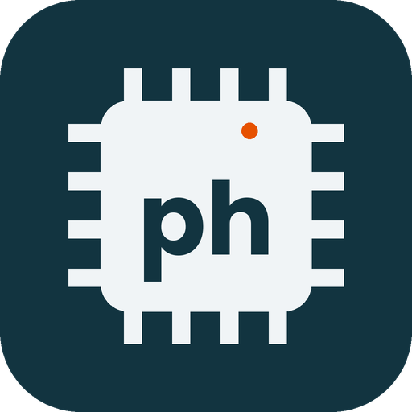
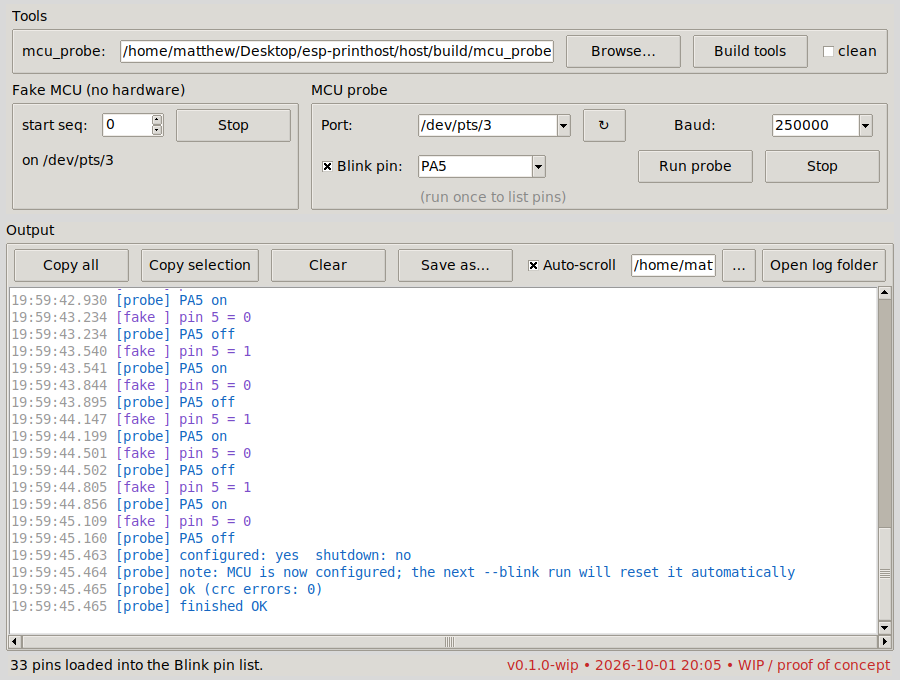

A WiFi "brain" for old 3D printers. Today: a tested C++ Klipper protocol library and PC tools. Slow-moving hobby project.

The GUI talking to the built-in simulated board (no hardware in this screenshot).
CRC16, variable-length ints, framing, resync and the board's data dictionary. 122 unit tests.
Identify it, list its pins, reset it, toggle one pin. Tried on a BTT SKR Pico (RP2040).
A fake board speaks the same protocol so you can try everything on a laptop.
Installs dependencies, fixes serial-port access and opens the GUI on Linux Mint / Ubuntu.
No ESP32 firmware, no Klipper firmware fork with a segment queue, no web UI, and nothing that moves a motor or heats a nozzle. This is groundwork only.
git clone https://github.com/The-Dorkknight/esp-printhost
cd esp-printhost
sudo python3 printhost.pyLinux only for the probe. See the README for what the setup command changes on your system.